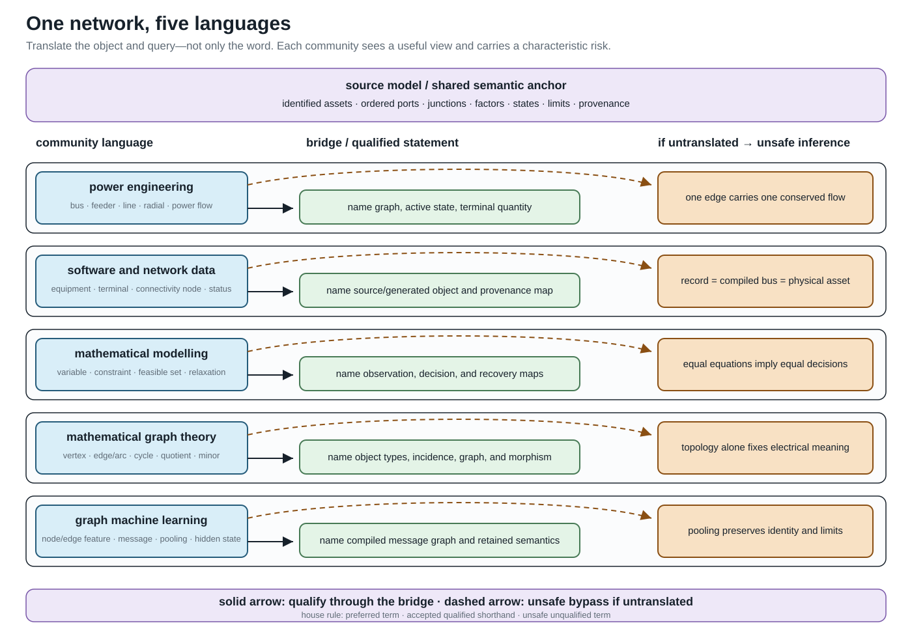

One network, five languages
Page status: explanatory cross-community vocabulary bridge; not a standards crosswalk.
The communities that work on power networks often use the same word for different objects, and different words for nearly the same object. This is more than a stylistic inconvenience. If edge, state, flow, or equivalent changes meaning halfway through an argument, a correct statement about one representation can become a false statement about another.
This book therefore uses a bridge vocabulary. It does not ask readers to abandon familiar language. It asks them to qualify a familiar term when that term carries mathematical, physical, software, or decision meaning.

The running network in five dialects
Consider the same multiconductor network with parallel circuits, explicit neutral and grounding, phase-selective switches, limits, and a multiwinding transformer. Each community has a useful description of it:
- Power engineering: buses, feeders, lines, transformers, radial operation, and power flow support physical interpretation and operating practice. The graph, terminal sign, device boundary, and active state may remain implicit.
- Power-system software and data: equipment records, terminals, connectivity nodes, statuses, profiles, and compiled buses support exchange, topology processing, and provenance. A record may represent a physical asset, generated object, or equation object.
- Mathematical modelling and optimization: variables, constraints, parameters, feasible sets, objectives, and relaxations support decision semantics and formal comparison. Source identity and physical recovery may be outside the formulation.
- Mathematical graph theory: vertices, edges, arcs, multigraphs, incidence, cycles, quotients, and minors support structural theorems and algorithms. The physical referent and load-bearing attributes must be added.
- Graph machine learning: heterogeneous nodes and edges, features, message passing, pooling, embeddings, and hidden states support learned computation. Parallel identity, n-port structure, limits, and physical state survive only when the compiled graph and feature maps retain them.
None of these descriptions is the universal one. The bridge is the typed map from a community's phrase to the object and query meant in this book.
Circuit theory is not counted as a sixth target community in this route. Its language of nodes, branches, ports, multiports, incidence, tableau equations, and equivalents is a shared technical inheritance of power engineering and mathematical modelling, and part of the precise target vocabulary used here. Its own translation failures remain important; they are developed in Translation traps and Circuit formulations and the lowering boundary.
Translation is not word substitution
For each community term, the relation to the book's term should be classified before it is reused:
- Exact alias: interchangeable under the declared scope. For example,
Ybuscan be an alias for the declared nodal operator after its coordinate order and model class are fixed. The alias is to that operator, not to the source network or factor decomposition that assembled it. - Scoped alias: conventional shorthand that is safe only with a qualifier. The sentence branch $\ell$ has stored reference orientation $\ell ij$ is safe; branch $\ell$ is directed from $i$ to $j$ is not safe if it can be read as an operating-flow or one-way-admissibility claim.
- Broader or narrower term: one term contains distinctions omitted by the other. A physical line can contain several homogeneous model sections.
- Representation-dependent term: its referent changes with the selected view. Node, edge, cycle, and radial are the leading examples.
- False friend: the words coincide but the concepts do not. Electrical loss is not an ML loss; a GNN message is not a conserved power flow.
These labels are deliberately asymmetric. A term can be acceptable when reading a source and still be too weak to use in a preservation claim.
The collision set to learn first
Objects
Bus, node, vertex, junction, terminal, and port must not be collapsed into one noun. A bus may mean a busbar section, a connectivity node, a state-dependent topological node, a group of nodal variables, or a reporting aggregate. A graph vertex is whatever the declared graph makes a vertex. A port is a typed component interface; a junction supplies interconnection and conservation semantics.
Likewise, line, branch, edge, arc, relation, and matrix nonzero do not share one identity. A line $\ell$ owns intrinsic equipment or model data. The oriented triple $\ell ij$ orders its terminals. An edge in a support graph records algebraic coupling and may have no one-to-one physical asset.
An especially important collision is factor. Here it means a typed constitutive, control, measurement, limit, or decision relation over ports. It does not mean power factor or matrix factorization, although the same factor may become a node in a factor graph.
Electrical coordinates and reference
Ground, earth, neutral, grounding impedance, and voltage reference are not names for one zero-voltage node. Earth can be a physical return medium; a neutral is a conductor with a state and current; a grounding impedance is a factor between declared terminals; and a voltage reference removes gauge freedom. Eliminating a neutral coordinate does not eliminate its recovered current or a limit on that current.
Phase, conductor, terminal coordinate, and sequence also name different structures. A conductor is a physical or modelled path, a terminal coordinate is one ordered component of an interface vector, and a sequence component is a transformed coordinate. Phase $a$ may refer to an asset label, a bus terminal, a voltage coordinate, or a phase-domain component; the terminal and coordinate maps decide whether those uses coincide.
Structure and state
Graph, topology, adjacency, parallel, cycle, tree, and radial require a named representation and usually an active state. A simple bus projection, an identified asset multigraph, a conductor-coordinate support graph, and a GNN message graph can give different answers for the same source network.
State is also overloaded. It can mean continuous electrical state variables, discrete equipment status, an operating scenario, an estimator state, or an ML hidden representation. The book uses a modifier whenever two of these meanings are in scope.
Quantities and computation
Direction may mean stored orientation, terminal-current sign, observed power transfer, rooted-tree order, causal dependence, one-way admissibility, or message direction. None implies the others.
Flow may mean a conserved commodity variable, internal series current, terminal current, terminal complex power, an operating transfer, or a learned message. A lossy AC device generally exposes a tuple of terminal powers rather than one antisymmetric edge-flow scalar.
Limit, rating, and constraint occupy different layers. A rating is an equipment or operational datum; a mathematical constraint is a particular encoding of admissibility; whether that constraint binds belongs to an operating point or solution.
Transformations and evidence
Projection, compilation, lowering, elimination, aggregation, reduction, coarsening, and pooling are not interchangeable ways of saying make the graph smaller. Compilation can make a graph larger. Elimination can create fill. Pooling can erase member identities required by a decision problem.
Equivalent, exact, and structure preserving are incomplete until their object is named. The relevant claim may concern an algebraic identity, boundary behaviour, topology, feasible decisions, objective value, limits, measurements, numerical sparsity, or provenance.
Two cross-community false friends deserve permanent warnings:
- normalization can mean per-unit conversion, conductor-coordinate canonicalization, schema normalization, or ML feature scaling;
- loss can mean electrical dissipation, information discarded by a map, or an ML training objective.
House policy: familiar words with explicit qualifiers
The five relation classes above classify the map between vocabularies. The three statuses below classify how a term may be used in this book. They are orthogonal: a false friend is often unsafe, but a representation-dependent term can be accepted shorthand once its representation is named.
The book uses three vocabulary statuses (VOCAB-BRIDGE-001):
- A preferred house term is used in definitions, claims, contracts, and executable artifacts.
- An accepted qualified shorthand is retained when it helps a community read naturally and its scope is stated nearby.
- An unsafe unqualified term is accompanied by the missing representation, quantity, state, or preservation object.
For example, radial feeder remains useful prose. A load-bearing statement is written as the active simple bus projection is a tree in state $\sigma$. Similarly, power flow on line $\ell$ is replaced in an equation or limit claim by the relevant terminal observation $\mathbf S_{\ell ij}$ or $\mathbf S_{\ell ji}$ and its sign convention.
The recurring Vocabulary bridge callout belongs to this policy. It marks a local crossing between community language and the house vocabulary; it must name the missing object or qualifier and the inference that would otherwise be unsafe.
Three worked translations
Community phrase: Power flows downstream on each edge of the radial feeder.
A testable translation names (i) the active bus-level graph, state, and root that define the parent relation; (ii) the oriented terminal at which active power is measured; and (iii) the fact that its sign is an operating result. It does not infer member-radiality, losslessness, or permanent upstream and downstream asset labels.
Community phrase: Pool the parallel edges and run message passing on the network graph.
A testable translation names the computational graph and pooling map, then asks whether line identity, outage state, member limits, conductor coordinates, and recovery are inputs to the downstream query. If they are, the pooled graph needs side information or is not a sufficient representation for that task.
Community phrase: Ground the neutral, then remove the neutral node.
A testable translation separates the neutral conductor, its connections, each grounding impedance or earth-return factor, and the gauge reference. It then names whether remove means a topological projection, a fixed linear Kron elimination, or omission from the source model. If the neutral is eliminated, the recovery map must still evaluate every retained neutral-current, grounding, protection, and decision constraint in the declared domain.
Where to go next
The Translation traps chapter develops the most dangerous false inferences. Representation taxonomy defines the graph families, Notation and modelling conventions fixes semantic ownership and indices, and the maintained Terminology page provides the compact lookup vocabulary. The generated cross-community vocabulary indexes support both community-to-book and book-to-community lookup. The later preservation-contract chapters turn these linguistic qualifications into mathematical obligations.